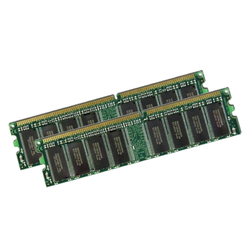

Unix 1.0

Gerencias

Unix 1.0
GERENCIA DE MEMORIA
Gerencia de Memoria
Nas primeiras versoes ela era baseada, segmentada ou paginanda e na versao mais recente se tornou Segmentada/Paginada.A Gerencia de memoria garante proteção e permite modificações dinamicas no espaço de endereçamento, ela tabém mantém o maior número possivel de processos carregados na memória e minimiza transferencias entre disco e memória. Sua implementação nas arquiteturas segmentadas ou baseadas se dá pela transferencia Swapping, e nas arquiteturas segmentadas/paginadas por meio da Paginação por demanda.
(imagen= http://files.sistemasdearquivos.webnode.com.br).
{kind=link}
Paginação
(imagem=http://4.bp.blogspot.com/).
Paginação: Uma tabela controla o numero e o local onde as paginas que saem da memoria são alocadas em disco, assim quando um processo é chamado para a execusão e este não se encontra na memoria a gerencia verifica na tabela a posição das paginas referentes ao processo para busca-las em disco e posteriormente carregar na memoria fisica.{kind=link}
Unix 1.0
GERENCIA DO PROCESSADOR
Gerencia do processador
Uma tarefa da Gerencia de processamento é o Escalonamento de processos, este escalonamento tem por objetivo permitir o compartilhamento do processador entre os processos que o desputam e oferecer baixo tempo para as respostas aos usuarios. A Prioridade dos processos no UNIX vai de 0 á 127 e quanto menor o valor maior a sua prioridade, os processos quando estao em estado de pronto ocupam filas para o uso do processador que as escalona conforme suas prioridades, e quando está em execução este permanece por um periodo de tempo que varia de 10 a 100 milisegundos e depois retorna para as filas de espera. O UNIX utiliza dois tipos de escalonamento de processador:- Escalonamento Por Prioridades _Se não houvesse uma gerencia de processamento e somente um escalonamento por prioridades processos com prioridades baixas poderiam sofrer Starvation ou seja nunca serem executados, por sempre surgirem processos mais prioritarios que ele, neste caso a gerencia de processador do unix faz a cada momento um calculo das prioridades dos processos que estao na fila de espera levando em conta seu tempo de espera e prioridade em si.
- Escalonamento Circular Com Prioridades _O Escalonamento circular fica com a parte de realimentação das filas de espera, ja que ele delimita o tempo maximo de execução dos processos
(imagen= http://www.ppgia.pucpr.br/~laplima/ensino/soecd/so_common/materia/02_processos.html)
{kind=link}
Unix 1.0
GERENCIA DE ARQUIVOS
Gerencia de Arquivos
O Sistema de Arquivos no UNIX possui uma estrutura semelhante a uma arvore ou um organograma que parte do diretorio raiz "/" apartir da raiz temos o /bin, /dev , /etc, /lib, /user, /tmp como apresentado na imagem a baixo:- /bin. Armazena alguns executaveis e comandos basicos do sitema, geralmente ocupa um tamanho de 5 a 7 MB;
- /dev. O diretorio "dev" contem ponteiros para dispositivos de hardware, por exemplo o /dev/mouse contem as informações enviadas pelo mouse.
- /etc. concentra os arquivos de configuração do sistema.
- /lib. Aqui ficam as bibliotecas usadas pelos programas semelhante aos arquivos .dll no Windows.
- /usr. local onde é encontrado os executaveis e as bibliotecas de todos os programas instalados.
- /tmp. Neste local ficam armazenados os arquivos temporarios.
Unix 1.0
GERENCIA DOS DISPOSITIVOS DE ENTRADA E SAIDA
Gerencia de Entrada e Saida
No desenvolvimento do Sistema UNIX a gerencia de entrada e saida foi criada de forma integrada ao sistema de arquivos, logo o acesso aos dispositivos é feita através de arquivos especiais, e cada dispositivo está associado a um ou mais destes arquios.As chamadas destes arquivos acontecem pelas System Calls de leitura e gravação que são chamadas de sistemas respondendo a açoes de programas do usuario.